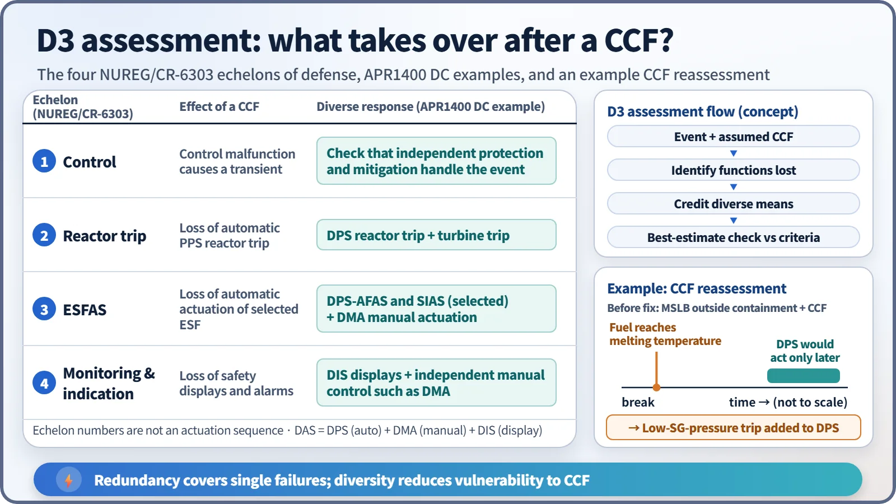
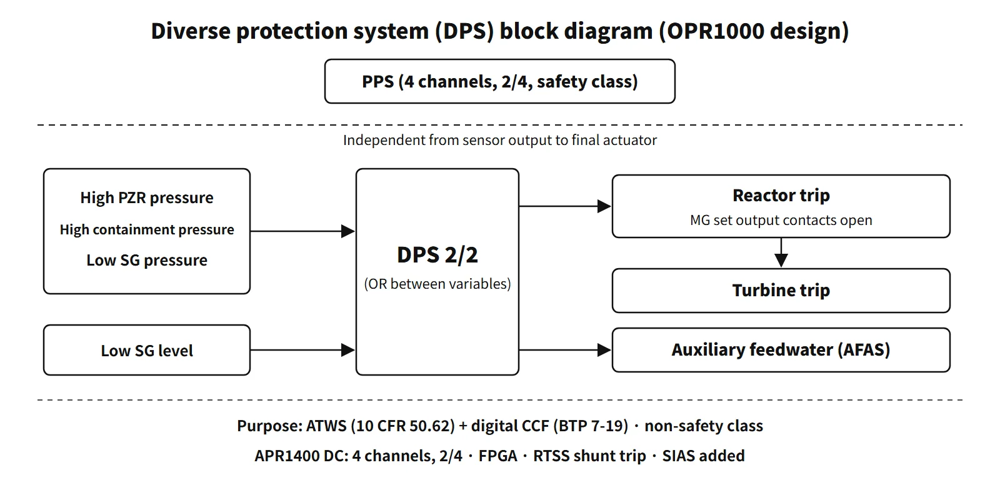

Systems & Equipment · C-SY-004
Diverse Protection System (DPS) — An Independent Trip Path Against Common-Cause Failure of the Protection System
Why a digital protection system needs a second, different trip path, and how the DPS trips the reactor, the turbine and starts auxiliary feedwater on its own.
The diverse protection system (DPS) is a non-safety-class backup protection system that is independent of the plant protection system (PPS) from the sensor output to the final actuating devices and is built on a different technology. It trips the reactor, trips the turbine and actuates auxiliary feedwater to cope with ATWS and with software common-cause failure (CCF) of the digital protection system, and in some designs it also generates safety injection and containment isolation signals.
The basis is Article 27 of the Korean technical standard rule for reactor facilities, 10 CFR 50.62 and NUREG-0800 BTP 7-19. The "multiple protection system" in the 2026 exam paper and the "Diversity Protection System" in the 2023 paper refer to the same system.
Principle and mechanism
Why add one more system?
The PPS has four channels in a 2-out-of-4 arrangement, so it tolerates single failures well. But all four channels run the same software on the same platform, so a single latent design defect could disable all four at once. That is a common-cause failure. Adding channels (redundancy) cannot prevent it; the defence is to add something different (diversity).
- Independence: signal and actuation paths separate from the PPS, from the sensor output to the actuating device
- Technology diversity: if the PPS uses PLCs, the DPS uses a DCS or FPGAs
- Functional diversity: the same event is also detected through a different variable, such as containment pressure
- Actuator diversity: at standard plants, control-rod power is cut by opening the MG set output contacts instead of the reactor trip breakers
Input → coincidence logic → output (standard OPR1000)
| Output | Input variables | Final action |
|---|---|---|
| Reactor trip | High pressurizer pressure, high containment pressure, low steam generator pressure (added by design change after the 2018 reassessment) | CEDM MG set output contacts open → control rods drop |
| Turbine trip | Linked to sensing of CEDM power loss | Turbine trips |
| Auxiliary feedwater actuation (DPS-AFAS) | Low steam generator level | Auxiliary feedwater pumps and valves start |
Each variable uses channel coincidence (2/2), and the variables are combined by OR. The reactor does not need high pressurizer pressure and high containment pressure together to trip.
![Structure diagram: the safety-class PPS path (4 channels 2/4, reactor trip breakers, CEDM power cut) can be defeated by a software CCF; below it the non-safety standard OPR1000 DPS path takes high pressurizer pressure, high containment pressure and low SG pressure into per-variable 2/2 coincidence logic, ORed between variables, to open the CEDM MG set contacts so the rods drop and the turbine trips, and low SG level into 2/2 logic for DPS-AFAS; a side box lists APR1400 DC differences: 4 channels 2/4 on FPGA controllers, shunt trip of the reactor trip breakers, DPS-SIAS and a turbine trip 3 s after a reactor trip](../../assets/images/concepts/c-sy-004-diverse-protection-system/fig1-dps-independent-path.webp)
The setpoints are coordinated so that the PPS acts first. There is no interlock between the DPS and the PPS, so if the setpoint margin is small, the DPS could trip the reactor before the PPS. The DPS acts on its own conditions but is set to follow the PPS in normal circumstances. For APR1400 high pressurizer pressure this margin was smaller than the total DPS channel uncertainty, so the setpoint method was refined.
What it means in a plant
Output signals of the standard plant (OPR1000) and their purpose
The "standard plant" in the 2025 question is the Korean Standard Nuclear Power Plant (OPR1000). The configuration in the KAERI instrumentation and control hardware description (2003) is as follows.
- Reactor trip signal: two channels in 2/2 logic cut power to the CEDMs by opening the CEDM motor-generator (MG) set output contacts. This is a different actuating device from the PPS reactor trip breakers. The DPS manual trip button in the main control room opens the same contacts. The purpose is to shut off core power during ATWS.
- Turbine trip signal: stops steam extraction on the secondary side to preserve steam generator inventory. A function that trips the reactor on a turbine trip when the reactor power cutback system is inoperable can also be selected from the main control room.
- Auxiliary feedwater actuation signal: starts auxiliary feedwater on low steam generator level to secure a heat sink.
- Status and alarm signals go to the annunciator system and the plant computer.
The hardware has two channels and dual power supplies. The controllers were originally PLCs and have since been replaced with FPGAs (FLC). The 2/2 logic prevents spurious trips and spurious AFAS but cannot tolerate a fault: bypassing one channel for testing or maintenance removes the function.
The 2018 reassessment and the low-SG-pressure trip
During the operating licence review of Shin-Hanul 1 and 2 in 2018, errors were found in the common-cause failure assessment. There were three: the reload core was not reflected, the power increase from post-accident xenon decrease was missing, and the change in axial power distribution was not considered. The same errors were found at 12 units with digital protection systems. The reassessment showed that for a main steam line break outside containment combined with CCF, the DPS would actuate about 10–15 minutes after the accident, while fuel reached its melting temperature (2,704 ℃) from about 2 minutes 24 seconds.
So two pressure transmitters were added on each steam generator (four per unit) and a low steam generator pressure reactor trip was added to the DPS. It was applied in turn from Shin-Hanul 1 and 2 and Saeul 1 and 2 through Shin-Kori 1 and 2, Shin-Wolsong 1 and 2 and Hanul 5 and 6 (licence amendment, September 2023). The transmitters are non-safety class; the sensing lines and isolation valves are Safety Class 2.
How the APR1400 evolved
| Item | Saeul 1 and 2 | Shin-Hanul 1 and 2 | Saeul 3 and 4 | APR1400 DC (US) |
|---|---|---|---|---|
| Channels and logic | 2 channels, 2/2 | 2 channels, 2/2 | 2 channels, 2/2 | 4 channels, 2/4 |
| Platform | DCS | DCS | DCS | FPGA-based controllers |
| Added functions | — | Conventional switches, a test panel in each cabinet | SIAS; DPS and DMA signals to containment isolation valves | SIAS; shunt trip of the RTSS breakers (the PPS uses the undervoltage trip) |
DPS-SIAS was added because the CCF assessment in South Korea does not credit manual action within 30 minutes after an accident. The basis was an analysis showing that if a large LOCA coincides with CCF of the PPS and ESF-CCS, fuel damage is a concern about 5 minutes after the safety injection tanks finish discharging (KNS 2012). Saeul 3 and 4 also added a DPS signal (through a safety-class isolator) and a DMA signal (analog hardwired) to the containment isolation valves.
In the US-certified APR1400, the DPS turbine trip starts automatically with a 3-second delay on a PPS or DPS reactor trip condition. The DPS, DMA and DIS together are called the diverse actuation system (DAS).
- DMA (diverse manual ESF actuation): switches in the main control room for manual control of key safety functions without passing through the digital safety system
- DIS (diverse indication system): a single-channel system that continuously displays critical safety variables on equipment different from the safety I&C
The DPS is credited for meeting 10 CFR 50.62, and the DAS as a whole for meeting the four points of BTP 7-19.
Relation to ATWS events
The "six ATWS event types considered by the DPS" in the 2026 question are the AOOs with reduced heat removal in the APR1400 ATWS assessment: (1) loss of external load, (2) turbine trip, (3) loss of condenser vacuum, (4) closure of the main steam isolation valves, (5) loss of offsite power, (6) loss of normal feedwater.
Regulatory basis
| Basis | Key point |
|---|---|
| Korean technical standard rule, Article 27(1) | Install a separate protection system with reactor trip, emergency auxiliary feedwater actuation and turbine trip functions, against transients in which the reactor fails to trip when it should |
| Same article, (2) | Independent of the reactor protection system from the output of the sensing devices to the drive of the final actuators |
| Same rule, Article 26(2) | Defence in depth and diversity of digital protection systems |
| 10 CFR 50.62(c)(1)(2) | Diverse turbine trip and auxiliary feedwater for all PWRs; diverse scram system for CE and B&W plants |
| SRM-SECY-93-087 II.Q → BTP 7-19 | Four D3 points for digital I&C; current Rev. 9 (May 2024) |
The four points of BTP 7-19 are: (1) perform a D3 assessment; (2) analyse each event in the accident analysis with a postulated CCF, using best-estimate methods; (3) if a CCF disables a safety function, provide a different means not affected by the CCF (which may be non-safety); (4) provide independent and diverse displays and manual controls for critical safety functions in the main control room. The analysis is done for each of the four echelons of defense in NUREG/CR-6303 (control, reactor trip, ESFAS, monitoring and indication).

The acceptance criteria are: for an AOO + CCF, dose no more than 10 % of the site dose guideline values and RCPB integrity maintained; for an accident + CCF, dose no more than the guideline values and RCPB and containment integrity maintained.
Compared with when these questions were set, R076 (2005) was under the former Atomic Energy Act framework, and since 2016 DPS-SIAS, the low-SG-pressure trip, the move to FPGAs and the four-channel 2/4 design have been added. BTP 7-19 has also moved from Rev. 6 and 7 to Rev. 9.
Easily confused pairs
| PPS | DPS | AMSAC | DSS | |
|---|---|---|---|---|
| Class | Safety | Non-safety | Non-safety | Non-safety |
| Reactor trip | Yes | Yes | No | Yes |
| Turbine trip and auxiliary feedwater | AFAS (an ESFAS function) | Yes | Yes | No |
| Failure covered | Single failure | ATWS and CCF | ATWS | ATWS |
| Applied in | CE plants, APR1400 | OPR1000, APR1400 | Westinghouse plants | CE and B&W plants |
Redundancy installs several identical items to cover single failures; diversity installs something different to reduce vulnerability to CCF.
Key points at a glance
- Definition: non-safety-class backup protection system independent of and diverse from the PPS (Korean technical standard rule, Article 27).
- Purpose: (1) ATWS mitigation (10 CFR 50.62); (2) protection against software CCF of the digital PPS and ESF-CCS (BTP 7-19).
- Reactor trip: high pressurizer pressure, high containment pressure, low SG pressure (added after the reassessment) → CEDM power cut.
- Turbine trip: preserves secondary inventory (APR1400 DC: 3-second delay after a PPS or DPS trip).
- DPS-AFAS: low SG level → auxiliary feedwater starts.
- DPS-SIAS: covers large LOCA + CCF (Saeul 3 and 4, APR1400 DC).
- Final action: OPR1000 opens the MG set output contacts; the APR1400 DC energizes the shunt trip coils of the RTSS reactor trip breakers (the PPS de-energizes the undervoltage trip coils).
- Configuration: two channels, 2/2 in South Korea (prevents spurious actuation) → four channels, 2/4 in the DC; platform PLC or DCS → FPGA.
- Setpoints: coordinated so the PPS acts first.
- DAS: DPS (automatic) + DMA (manual) + DIS (indication).

This is a model answer, not an official solution. It reflects the criteria current as of 2026.
Exam relevance
The DPS has appeared five times in the Korean Professional Engineer (Nuclear Power) exam: 76th exam, session 4, Q6 (meaning of ATWS and the function and operating principle of its mitigation systems); 2016 exam, session 3, Q6 (purpose and functions of the DPS at OPR1000 and APR1400 plants); 2023 exam, session 2, Q2 (RPS, ESFAS and DPS); 2025 exam, session 2, Q4 (purpose, functions and output signals of the DPS at a standard plant); and 2026 exam, session 2, Q4 (APR1400 PPS and CPC, and the six ATWS event types considered by the DPS). Typical questions ask for the purpose (ATWS plus digital CCF), the input variables and output signals, comparison with the RPS and ESFAS, and the list of ATWS events. The exam papers name it inconsistently ("multiple protection system", "Diversity Protection System"), so state at the start that it is the DPS, answer "standard plant" questions on an OPR1000 basis, and add the APR1400 differences.